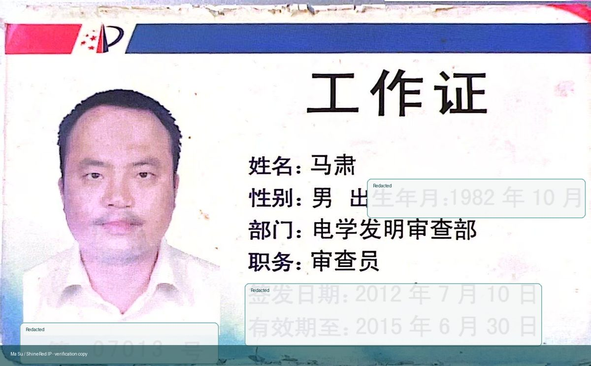
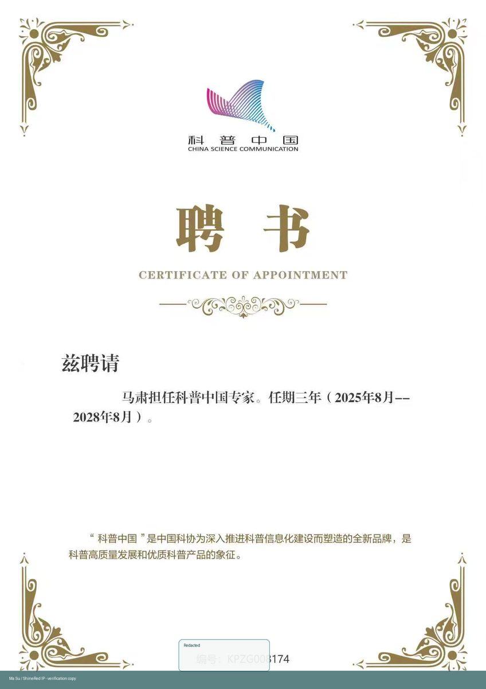
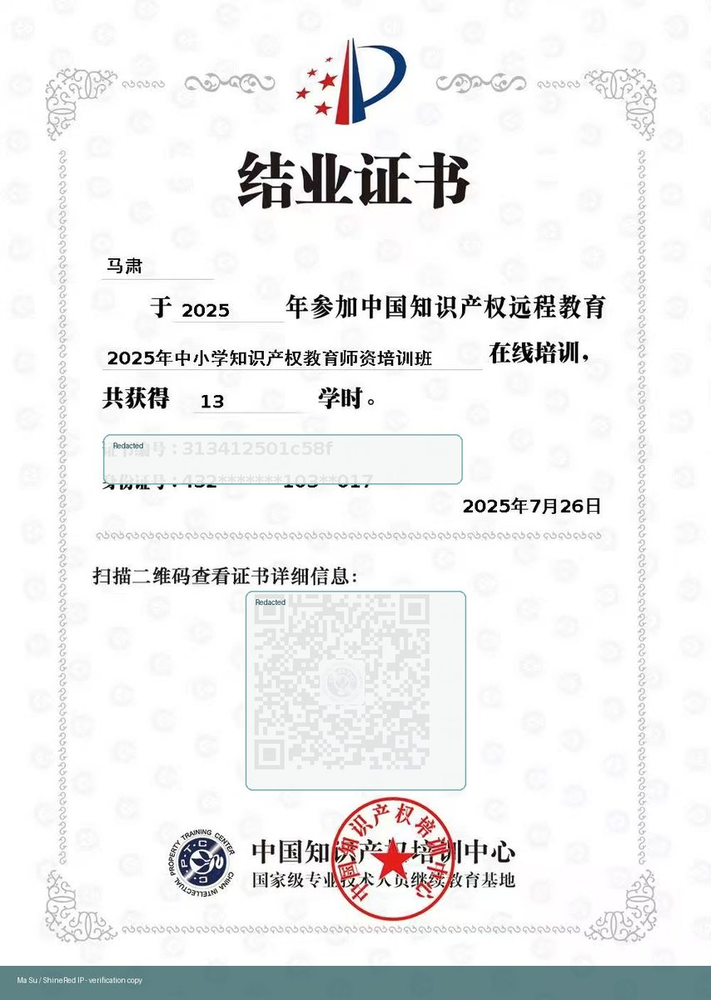
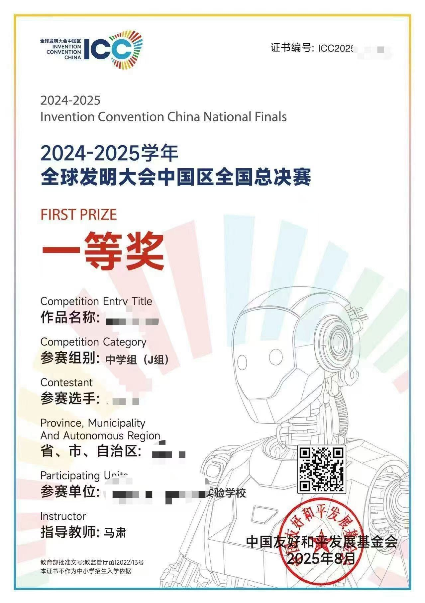

Former Patent Examiner
Former patent examiner at CNIPA Patent Office and former associate researcher at the Guangdong Patent Examination Cooperation Center.
About Ma Su
Ma Su helps innovators move from real problems to protectable technical solutions. His work connects patent examination logic, patent-map guided innovation, AI-era science education, and cross-border IP strategy.
中文定位
他把前国家知识产权局专利审查经验、专利信息分析、AI协同创新、青少年科创能力评估、成果转化和专利布局整合成一套完整方法论，帮助创新主体把真实问题转化为可验证、可保护、可转化的创新方案。

Global positioning
For international clients, Ma Su's value is not limited to filing documents in China. He reads technology through the lens of an examiner, converts patent information into innovation options, and helps teams create portfolios that can defend future business space.
Authority
Former patent examiner at CNIPA Patent Office and former associate researcher at the Guangdong Patent Examination Cooperation Center.
Executive partner of Beijing Tsingkong Zhiyun IP Agency and executive director of Guangdong ShineRed Intellectual Property Co., Ltd.
External graduate mentor of Central South University and author of an AI-era practical science innovation curriculum.
Adviser to the Hunan Intellectual Property Office, with long-term practice in IP education, patent strategy, and technology transfer.
Selected credentials
Public display versions are redacted and watermarked to protect personal information while preserving professional verification value.






The Method
This route comes from Ma Su's science innovation education work: innovation is not a mysterious talent game, but a trainable capability. The same logic is used for companies and patent firms: define the real problem, understand existing technology, find technical gaps, create defensible alternatives, and protect the outcome.
Work with Ma Su